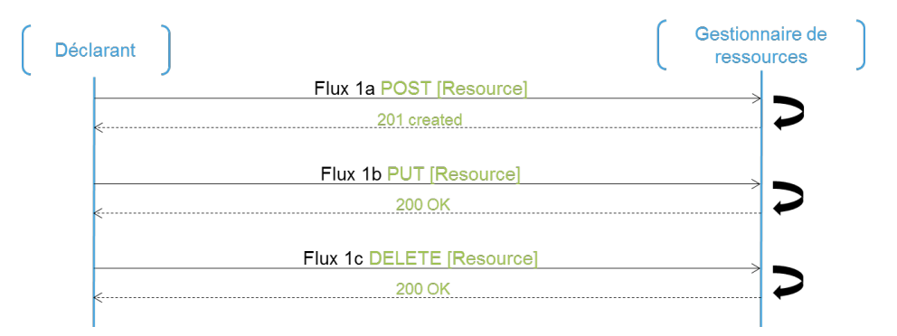
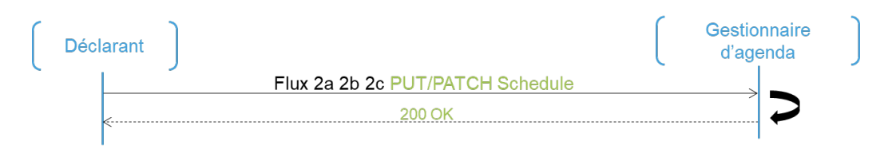
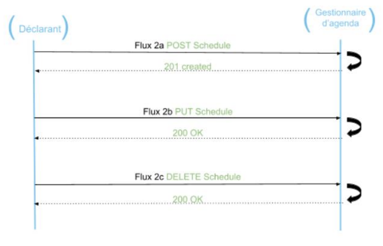
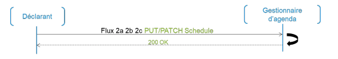
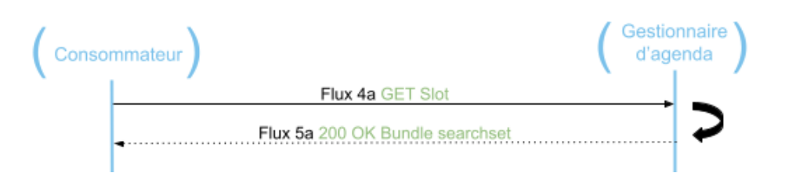
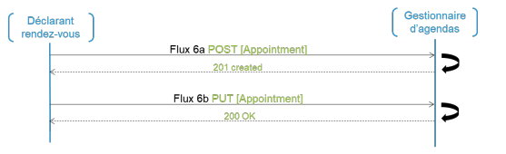

Links: Table of Contents | QA Report | Historique des versions Documentation | New Issue
https://hl7.fr/ig/fhir/core/CodeSystem/fr-core-cs-schedule-type
https://mos.esante.gouv.fr/NOS/TRE_R38-SpecialiteOrdinale/FHIR/TRE-R38-SpecialiteOrdinale
This fragment is not visible to the reader
This publication includes IP covered under the following statements.
| Type | Reference | Content |
|---|---|---|
| web | exampleserver.org | FR Core Appointment Operator Extension : https://exampleserver.org/fhir/Patient/1 |
| web | exampleserver.org | slot : https://exampleserver.org/fhir/Slot/example |
| web | exampleserver.org | actor : M Martin |
| web | exampleserver.org | actor : Dr Langdon, cabinet Paris |
| web | exampleserver.org | actor : Dr Langdon |
| web | exampleserver.org | Dr Langdon, cabinet Paris |
| web | exampleserver.org | Dr Langdon |
| web | exampleserver.org | schedule : https://exampleserver.org/fhir/Schedule/example |
| web | esante.gouv.fr |
|
| web | esante.gouv.fr | Site de l'ANS |
| web | interop.esante.gouv.fr | Documentation |
| web | esante.gouv.fr |
IG © 2020+ ANS
.
Package ans.fhir.fr.gap#3.0.0 based on FHIR 4.0.1
.
Generated
2026-06-26
Links: Table of Contents | QA Report | Historique des versions Documentation | New Issue |
| web | interop.esante.gouv.fr | Links: Table of Contents | QA Report | Historique des versions Documentation | New Issue |
| web | github.com | Links: Table of Contents | QA Report | Historique des versions Documentation | New Issue |
| web | solidarites-sante.gouv.fr |
|
| web | esante.gouv.fr |
|
| web | en.wikipedia.org | Both Bundle.link and Bundle.entry.link are defined to support providing additional context when Bundles are used (e.g. HATEOAS ). |
| web | github.com | Pour cela, il suffit de télécharger le package.tgz et l'importer dans un serveur, par exemple sur hapi en suivant ce script python open source. |
| web | interop.esante.gouv.fr | Les ressources d'agenda représentent une personne, un lieu ou un objet pouvant posséder un agenda. Les ressources FHIR définies par l' annuaire santé ou le ROR peuvent être utilisées comme ressource d'agenda. Pour les ressources de type personne, il est important de recueillir l’adresse électronique pour permettre l’envoi de notifications et l’envoi d’objets iCalendar, après mise en correspondance (cf. Annexe 1), pour une meilleure intégration dans les agendas électroniques non spécifiques au secteur. |
| web | esante.gouv.fr | Il est à noter que les contraintes de sécurité concernant les flux échangés ne sont pas traitées dans ce document. Celles-ci sont du ressort de chaque responsable de l’implémentation du mécanisme qui est dans l’obligation de se conformer au cadre juridique en la matière. L’ANS propose des référentiels dédiés à la politique de sécurité (la PGSSI-S ) et des mécanismes de sécurisation sont définis dans les volets de la couche Transport du Cadre d’Interopérabilité des systèmes d’information de santé (CI-SIS). |
| web | esante.gouv.fr | Il est à noter que les contraintes de sécurité concernant les flux échangés ne sont pas traitées dans ce document. Celles-ci sont du ressort de chaque responsable de l’implémentation du mécanisme qui est dans l’obligation de se conformer au cadre juridique en la matière. L’ANS propose des référentiels dédiés à la politique de sécurité (la PGSSI-S ) et des mécanismes de sécurisation sont définis dans les volets de la couche Transport du Cadre d’Interopérabilité des systèmes d’information de santé (CI-SIS). |
| web | solidarites-sante.gouv.fr |
|
| web | esante.gouv.fr |
|
| web | esante.gouv.fr |
|
../assets/images/fra.svg 
|
|
ci-sis-logo.png |
|
flux1.png  |
|
flux2.2.png  |
|
flux2.png  |
|
flux3.png  |
|
flux4.png  |
|
flux6.png  |
tree-filter.png 
|
vav-ical.png 
|